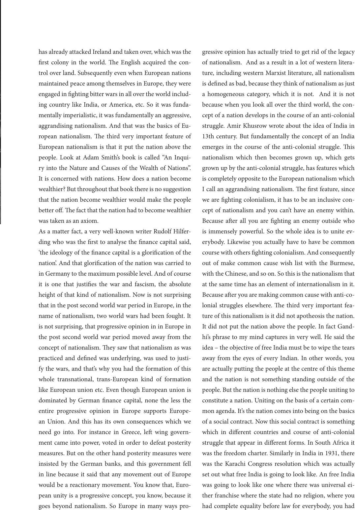

has already attacked Ireland and taken over, which was the
rst colony in the world. e English acquired the con-
trol over land. Subsequently even when European nations
maintained peace among themselves in Europe, they were
engaged in ghting bitter wars in all over the world includ-
ing country like India, or America, etc. So it was funda-
mentally imperialistic, it was fundamentally an aggressive,
aggrandising nationalism. And that was the basics of Eu-
ropean nationalism. e third very important feature of
European nationalism is that it put the nation above the
people. Look at Adam Smith’s book is called “An Inqui-
ry into the Nature and Causes of the Wealth of Nations”.
It is concerned with nations. How does a nation become
wealthier? But throughout that book there is no suggestion
that the nation become wealthier would make the people
better o. e fact that the nation had to become wealthier
was taken as an axiom.
As a matter fact, a very well-known writer Rudolf Hilfer-
ding who was the rst to analyse the nance capital said,
‘the ideology of the nance capital is a glorication of the
nation’. And that glorication of the nation was carried to
in Germany to the maximum possible level. And of course
it is one that justies the war and fascism, the absolute
height of that kind of nationalism. Now is not surprising
that in the post second world war period in Europe, in the
name of nationalism, two world wars had been fought. It
is not surprising, that progressive opinion in in Europe in
the post second world war period moved away from the
concept of nationalism. ey saw that nationalism as was
practiced and dened was underlying, was used to justi-
fy the wars, and that’s why you had the formation of this
whole transnational, trans-European kind of formation
like European union etc. Even though European union is
dominated by German nance capital, none the less the
entire progressive opinion in Europe supports Europe-
an Union. And this has its own consequences which we
need go into. For instance in Greece, le wing govern-
ment came into power, voted in order to defeat posterity
measures. But on the other hand posterity measures were
insisted by the German banks, and this government fell
in line because it said that any movement out of Europe
would be a reactionary movement. You know that, Euro-
pean unity is a progressive concept, you know, because it
goes beyond nationalism. So Europe in many ways pro-
gressive opinion has actually tried to get rid of the legacy
of nationalism. And as a result in a lot of western litera-
ture, including western Marxist literature, all nationalism
is dened as bad, because they think of nationalism as just
a homogeneous category, which it is not. And it is not
because when you look all over the third world, the con-
cept of a nation develops in the course of an anti-colonial
struggle. Amir Khusrow wrote about the idea of India in
13th century. But fundamentally the concept of an India
emerges in the course of the anti-colonial struggle. is
nationalism which then becomes grown up, which gets
grown up by the anti-colonial struggle, has features which
is completely opposite to the European nationalism which
I call an aggrandising nationalism. e rst feature, since
we are ghting colonialism, it has to be an inclusive con-
cept of nationalism and you can’t have an enemy within.
Because aer all you are ghting an enemy outside who
is immensely powerful. So the whole idea is to unite ev-
erybody. Likewise you actually have to have be common
course with others ghting colonialism. And consequently
out of make common cause wish list with the Burmese,
with the Chinese, and so on. So this is the nationalism that
at the same time has an element of internationalism in it.
Because aer you are making common cause with anti-co-
lonial struggles elsewhere. e third very important fea-
ture of this nationalism is it did not apotheosis the nation.
It did not put the nation above the people. In fact Gand-
hi’s phrase to my mind captures in very well. He said the
idea – the objective of free India must be to wipe the tears
away from the eyes of every Indian. In other words, you
are actually putting the people at the centre of this theme
and the nation is not something standing outside of the
people. But the nation is nothing else the people uniting to
constitute a nation. Uniting on the basis of a certain com-
mon agenda. It’s the nation comes into being on the basics
of a social contract. Now this social contract is something
which in dierent countries and course of anti-colonial
struggle that appear in dierent forms. In South Africa it
was the freedom charter. Similarly in India in 1931, there
was the Karachi Congress resolution which was actually
set out what free India is going to look like. An free India
was going to look like one where there was universal ei-
ther franchise where the state had no religion, where you
had complete equality before law for everybody, you had